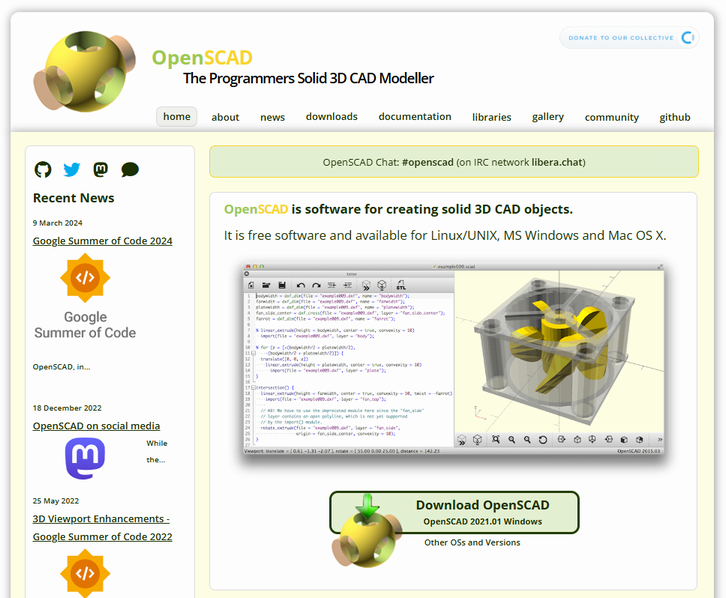
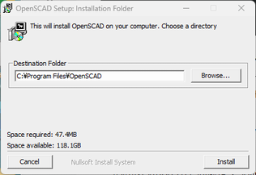
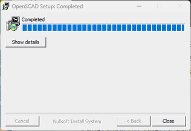
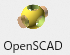
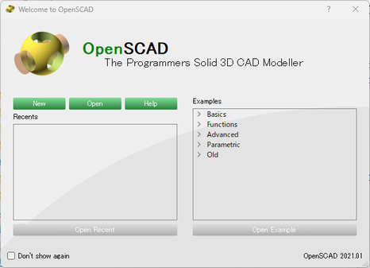
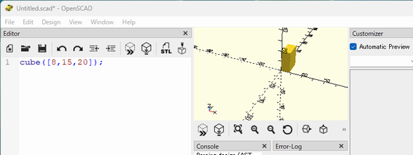

OpenSCADのインストール
概要
- 3D CADモデリングのためのソフトウェアで、プログラミングによるモデリング
- 芸術的なモデリングよりも、工業的な製品や日常の道具のモデリングに適している
- GPL ver2ライセンスでリリースされたフリーソフトウェア
- 本記事は2024年7月に実施した内容を記載
準備
- OpenSCAD公式サイトのDownload OpenSCAD または downloads から使用環境に合ったモノをダウンロードする。
 - ダウンロードしたexeファイルを起動し、[Install]し、[Close]。
 
起動して動作確認
- スタートメニューからOpenSCADアイコンを選択して起動する。
 - [New]。
 - 左側Editorで
cube([8,15,20]);を入力し、[F5]キーまたはメニュー[Design/Preview]でプレビュー（描画）する。
